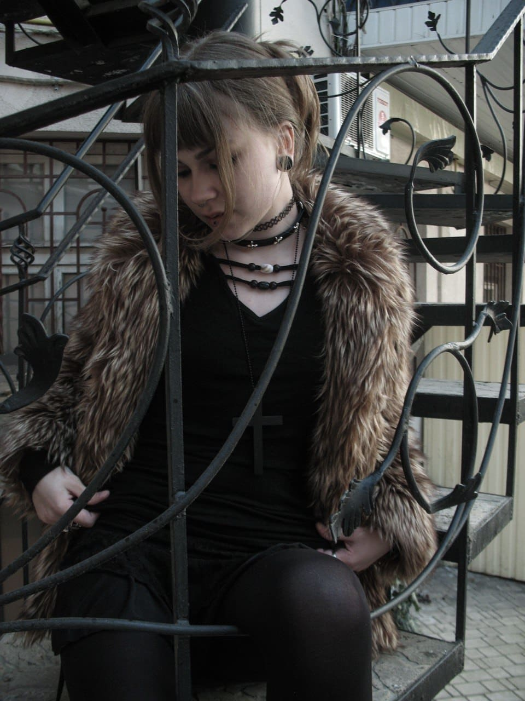
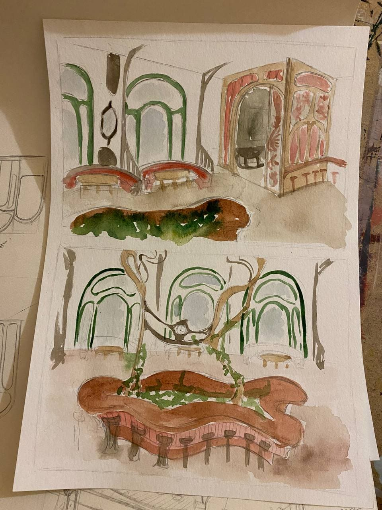

Я молодий та амбітний креативний дизайнер, який прагне поєднувати сучасні тенденції у світі дизайну з індивідуальним підходом до кожного проєкту. Для мене важливо створювати не просто візуально привабливі роботи, а й передаати через них ідею, настрій та характер, роблячи кожен дизайн унікальним і змістовним. Я постійно слідкую за новими тенденціями, експерементую з формами, кольорами та стилями, щоб розвиватися та вдосконалювати свої навички. Навчалась у коледжі «Сервер», де отримала знання з основ дизайну, композиції та тривмірного моделювання. Під час навчання я не лише опанувала технічні аспекти створення дизайну, але й навчилася мислити креативно, працювати з ідеями та втілювати їх у життя. Мій досвід дозволяє меня працювати з різними напрямами дизайну та створювати проєкти, які поєднують естетику, функціональність і сучасний підхід.
Дизайн-проєкт інтер'єру ресторану з елементами фірмового стилю
Сьогодні дизайн інтер'єру відіграє важливу роль у створенні атмосфери громадських місць, таких як ресторани. Він має бути не лише функціональним, але й естетично привабливим, щоб зацікавлювати відвідувачів. Тема "Дизайн інтер'єру ресторанів у стилі модерн" набуває все більшої популярності оскільки в сучасному світі, перенасиченому інформацією та візуальним шумом, людина прагне до просторів, які дарують відчуття гармонії, краси та затишку. Актуальність теми зумовлена кількома факторами. По-перше, зростаюча конкуренція на ринку ресторанних послуг змушує власників закладів шукати нові способи залучення клієнтів, і унікальний, продуманий дизайн стає однією з ключових конкурентних переваг. По-друге, спостерігається загальна тенденція до повернення історичних стилів у сучасну архітектуру та дизайн, їх переосмислення та адаптація до потреб сьогодення. Модерн з його філософією єдності людини і природи, індивідуальним підходом до кожного проєкту, відсутністю прямих ліній і жорстких канонів сучасним і затребуваним. По-третє, в Одесі, місті з багатою історією, подібні проєкти сприяють розвитку туризму та комерції. Місто зберігає чимало пам'яток цієї епохи, і створення сучасного інтер'єру в цій стилістиці дозволяє підтримати історичний контекст, сприяє розвитку туризму та формуванню культурної ідентичності міського середовища. Місцем реалізації такого задуму став будинок Кадора на вулиці Європейській, 27. Його трансформація у ресторан гармонійно об'єднує історичну спадщину з елементами сучасності. Метою дипломного проєкту є створення цілісного, функціонально досконалого та естетично виразного дизайн-проєкту інтер'єру ресторану в стилі модерн для приміщення на п'ятому поверсі торгово-офісного комплексу Kadorr в Одесі, який би відповідав потребам сучасних відвідувачів, підкреслював унікальні особливості локації та забезпечував комерційну успішність закладу. Основою композиції у дизайні інтер’єру стануть плавні лінії, що імітують природні форми, які знайдуть своє відображення в дизайні стелі та меблів. Колірна гама будуватиметься на темних природних відтінках: зелений, коричневий, теракотовий у поєднанні з акцентами латуні. Особлива увага приділятиметься освітленню, покликаному створити камерну, затишну атмосферу, що підкреслює вишуканість ліній і фактур. Практичне значення роботи полягає в можливості реального втілення даного проєкту, що дозволить не лише створити конкурентоспроможний, економічно ефективний ресторанний бізнес у престижному районі міста, але й збагатити культурне середовище Одеси, запропонувавши мешканцям і гостям міста новий якісний простір для дозвілля, виконаний з повагою до історичної спадщини та з використанням сучасних дизайнерських підходів. Проєкт демонструє, як звернення до класичних стилів у їх сучасній інтерпретації може стати основою для створення актуального, затребуваного середовища, що відповідає найвищим вимогам комфорту, безпеки та естетики.
